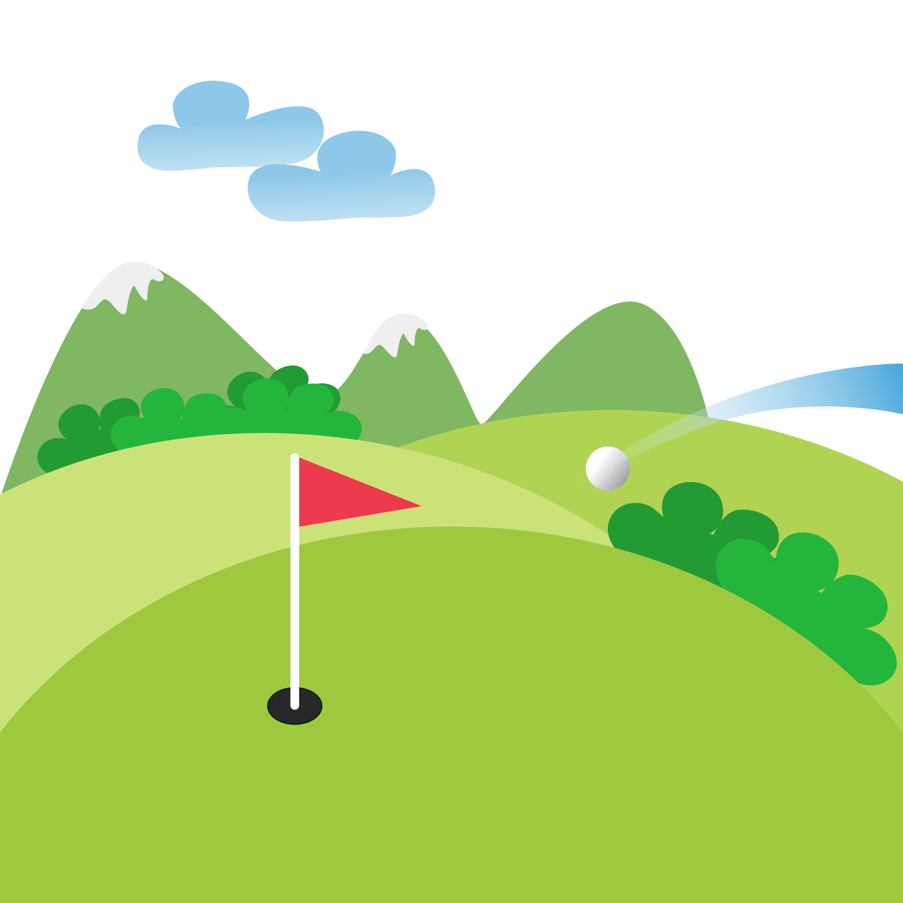

Executive Summary
Austin's toy-retail landscape stands out because it is still anchored by long-running independents rather than being dominated by national chains, with Terra Toys tracing its origins to 1978 and Toy Joy remaining one of the city's best-known toy brands since the late 1980s.16
Austin also supports a distinct educational-toy niche, especially in North Austin, where Lakeshore Learning operates a dedicated teacher-supply and learning-products store on Great Hills Trail.4
This report profiles eight stores and store concepts across the city: active independents, a museum-adjacent specialty outpost, a major educational chain, and historically significant closures such as Over the Rainbow and Learning Express.678
Austin's Toy Stores
Terra Toys

Terra Toys, at 2438 W. Anderson Ln. in North Central Austin, calls itself "Austin's Original Toy Store" and has been locally owned since 1978.1
The store emphasizes classic toys, games, books, art supplies, musical instruments, kites, and learning tools, and is known for demo-friendly browsing and an in-store cafe.16
Terra serves toddlers through adults, with prices ranging from small impulse buys to higher-ticket educational and outdoor items, and is currently open as one of the city's flagship independent toy retailers.16
Toy Joy Downtown

Toy Joy Downtown, at 403 W. 2nd St. in the 2nd Street District, is the flagship of one of Austin's most recognizable toy brands.2
The store is known for nostalgic, fun, and age-appropriate toys alongside collectibles, and appeals to both children and adults as a destination for quirky gifts and novelty browsing.26
Toy Joy Downtown is currently open and functions as a high-visibility toy and gift stop for locals and visitors in the city's core.2
Toy Joy Burnet Road
Toy Joy's Burnet Road location, at 5501 Burnet Rd. in North Central Austin, brings the brand's eclectic mix to a more neighborhood-oriented corridor.2
Public information highlights its role as a full Toy Joy outpost with extended hours, serving repeat neighborhood shoppers and last-minute gift buyers.2
Like the downtown flagship, the Burnet store focuses on novelty, nostalgia, and collectibles across a wide age range and is currently open.2
Toy Joy @ The Thinkery
Toy Joy @ The Thinkery, at 1830 Simond Ave. in Mueller, is Toy Joy's most specialized Austin location because it is integrated into the children's museum environment.2
The store keeps daytime, family-oriented hours and is positioned to serve visitors to The Thinkery and neighborhood families seeking museum-adjacent gifts and educational toys.2
This location is currently open and best suited to younger children and preschool-aged shoppers, though it maintains Toy Joy's general focus on playful, eclectic merchandise.2
Lakeshore Learning
Lakeshore Learning, at 9828 Great Hills Trail in Northwest Austin, is a national educational-toy and teacher-supply chain with a strong local footprint.4
The Austin store offers teacher resources, manipulatives, early-learning games, classroom decor, and educational toys, and is widely used by educators and homeschool families.4
Lakeshore is especially strong for ages 0–12 and for STEM and literacy-oriented play, and the Great Hills location is currently open.4
Monkey See Monkey Do
Monkey See Monkey Do, at 2810 Menchaca Rd. in South Austin, appears in local listings as a toy and gift shop with a mix of toys, novelties, and collectibles.5
Its hybrid identity makes it a good option for small gifts and impulse buys, especially for mixed-age groups and South Austin families.5
Although less documented than the city's largest toy stores, Monkey See Monkey Do remains part of Austin's independent specialty retail fabric and is currently open.5
Over the Rainbow (Closed)
Over the Rainbow, formerly at 1601 W. 38th St., has been described as Austin's oldest independent toy store, founded in 1975.67
Coverage highlights its traditional assortment of dolls, tricycles, toy vehicles, stuffed animals, puzzles, craft kits, and children's books, along with premium brands such as Steiff and Madame Alexander.6
Yelp now lists Over the Rainbow as closed, but it remains historically significant as a classic neighborhood toy store that defined an era of Austin toy retail.7
Learning Express Toys (Closed)
Learning Express Toys once operated in the Austin area and is remembered locally for a Bee Cave/Westlake-area store that served newborns through pre-teens.8
Community recollections emphasize helpful staff, birthday registries, and a curated selection of popular toys and games, blending franchise branding with local service.8
The Austin-area Learning Express location discussed in local forums is now closed, but it remains important context for understanding the city's former mix of independent and franchise toy options.8
Specialty Focus & Age Range Guide
| Store Name | Type | Best For (age range) | Price Range | Specialty | In-Store Events |
|---|---|---|---|---|---|
| Terra Toys16 | Independent | All Ages | $$–$$$ | Classic / General | Demo toys and experiential browsing often noted in coverage |
| Toy Joy Downtown26 | Independent | All Ages | $$–$$$ | Collectible / General | Occasional special promotions and themed displays |
| Toy Joy Burnet Road2 | Independent | All Ages | $$–$$$ | Collectible / General | Extended hours support after-work and evening visits |
| Toy Joy @ The Thinkery2 | Independent | 0–10 | $$ | General | Museum-adjacent location draws family and field-trip traffic |
| Lakeshore Learning4 | Educational Chain | 0–12 | $$–$$$ | STEM | Workshops and learning demos periodically promoted |
| Monkey See Monkey Do5 | Independent | All Ages | $–$$ | General | Informal browsing and seasonal gift selections |
| Over the Rainbow (closed)67 | Closed | 0–12 | $$–$$$ | Classic | Historically remembered for traditional toy-store browsing |
| Learning Express Toys (closed)8 | Closed | 0–12 | $$–$$$ | General | Registries and birthday-focused services recalled by families |
Austin's stores divide into three main modes: broad independent destinations such as Terra Toys, novelty- and collectible-focused shops like Toy Joy, and explicitly educational retailers like Lakeshore Learning.1246
Parents typically match stores to children's ages and interests: younger kids and school-age learners benefit from Lakeshore and the Thinkery-adjacent Toy Joy, while older children and adults gravitate toward Toy Joy's pop-culture emphasis and Terra's extensive classic assortment.1246
These shops also function as social infrastructure, providing spaces for families to browse together, discover new games and activities, and reinforce Austin's culture of learning, play, and local shopping.1246
Planning Considerations
- Independent toy stores in Austin often carry unique brands not found at big-box retailers — visit in person rather than searching online for the best selection.126
- Many Austin toy stores offer gift-wrapping, wish lists, and registry services that make them especially useful for birthday and holiday shopping.128
- STEM and educational toy shops are particularly plentiful in Austin given the city's tech workforce — look for stores near the Domain and North Austin tech corridors.14
- Holiday season (October–December) can see limited stock of popular items; call ahead or visit early in the season for the widest selection.
- Several beloved Austin toy stores have closed in recent years — the report notes historical shops so you understand the current landscape in context.678
References
- Terra Toys | Terra Toys - Austin's Original Toy Store — Official site confirming Terra Toys' address and position as a long-running local toy store.
- Toy Joy - Locations and Hours — Official page listing Toy Joy's Austin locations and operating details.
- Terra Toys and Toy Joy local coverage — Local media describing the history and character of Terra Toys and Toy Joy as iconic Austin toy retailers.
- Lakeshore Learning Austin store locator — Official description of the Austin Lakeshore Learning store and its teacher- and STEM-focused assortment.
- Monkey See Monkey Do local listing — Directory entry identifying Monkey See Monkey Do as a South Austin toy and gift shop.
- Local feature on iconic Austin toy stores — Article profiling Terra Toys, Over the Rainbow, and other notable Austin toy shops.
- Over the Rainbow Yelp listing — Confirms the store's former address and current closed status.
- Learning Express Toys community recollections — Social-media and forum posts recalling the Austin-area Learning Express store, its services, and its closure.